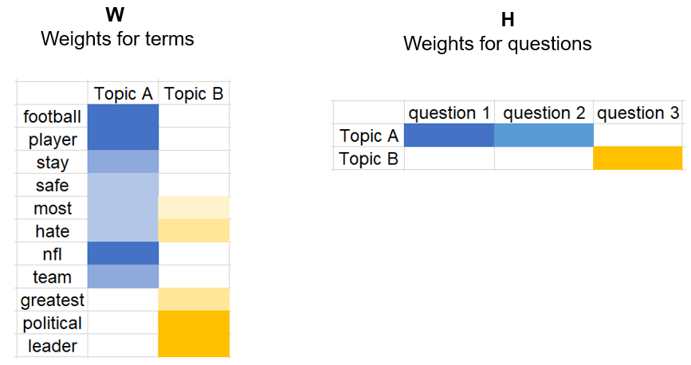
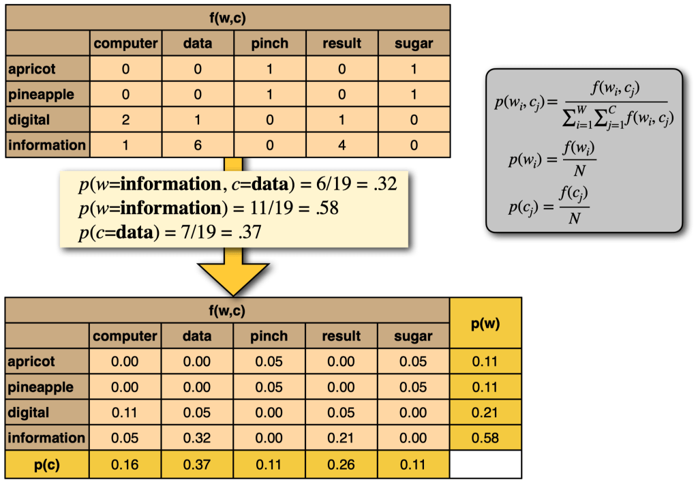
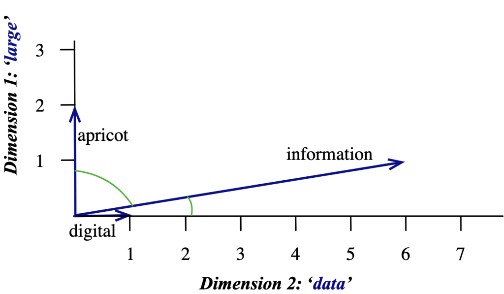

Vector Semantics and Representation#
Vector Semantics and Word Embeddings#
Lexical semantics is the study of the meaning of words
Distributional hypothesis: words that occur in similar contexts have similar meanings
Sparse vectors: one-hot encoding or bag-of-words
Dense vectors: word embeddings
What do words mean, and how do we represent that?#
cassoulet
Do we want to represent that …
“cassoulet” is a French dish?
“cassoulet” contains meat and beans?
“cassoulet” is a stew?
bar
Do we want to represent that …
“bar” is a place where you can drink alcohol?
“bar” is a long rod?
“bar” is to prevent something from moving?
About words, we can say that …
Concepts or word senses have a complex many-to-many relationship with words
Words have relations with each other
Synonyms: “bar” and “pub”
Antonyms: “bar” and “open”
Similarity: “bar” and “club”
Relatedness: “bar” and “restaurant”
Superordinate: “bar” and “place”
Subordinate: “bar” and “pub”
Connotation: “bar” and “prison”
Different approaches to lexical semantics#
NLP draws on two different approaches to lexical semantics:
Lexical semantics:
The study of the meaning of words
The lexicographic tradition aims to capture the information represented in lexical entries in dictionaries
Distributional semantics:
The study of the meaning of words based on their distributional properties in large corpora
The distributional hypothesis: words that occur in similar contexts have similar meanings
Lexical semantics#
Uses resources such as
lexicons,thesauri,ontologiesetc. that capture explicit knowledge about word meanings.Assumes that words have
discrete word sensesthat can be represented in alexicon.bank 1 = a financial institution
bank 2 = a river bank
May capture explicit knowledge about word meanings, but is limited in its ability to capture the meaning of words that are not in the lexicon.
dogis acanine(lexicon)carshavewheels(lexicon)
Distributional semantics#
Uses
large corpora of raw textto learn the meaning of words from the contexts in which they occur.Maps words to
vector representationsthat capture thedistributional propertiesof the words in the corpus.Uses neural networks to learn the dense vector representations of words,
word embeddings, from large corpora of raw text.If each word is mapped to a single vector, this ignores the fact that words can have multiple meanings or parts of speech.
How do we represent words to capture word similarities?#
As
atomic symbolsin a traditional n-gram language model
explicit features in a machine learning model
this is equivalent to very high-dimensional one-hot vectors:
aardvark = [1,0,…,0], bear = [0,1,…,0], …, zebra = [0,0,…,1]
height and tall are as different as aardvark and zebra
As very high-dimensional
sparse vectorsto capture the distributional properties of words
As low-dimensional
dense vectorsword embeddings
What should word representations capture?#
Vector representations of words were originally used to capture
lexical semanticsso that words with similar meanings would be represented by vectors that are close together in vector space.These representations may also capture some
morphologicalandsyntacticinformation about words. (part of speech, inflections, stems, etc.)
The Distributional Hypothesis#
Zellig Harris (1954):
Words that occur in similar contexts have similar meanings.
oculistandeye doctoroccur in almost the same contextsIf A and B have almost the same environment, then A and B are synonymous.
John Firth (1957):
You shall know a word by the company it keeps.
The
contextsin which words occur tell us a lot about the meaning of words.Words that occur in similar contexts have similar meanings.
Why do we care about word contexts?#
What is tezgüino?
A bottle of
tezgüinois on the table.Everybody likes
tezgüino.Tezgüinomakes you drunk.We make
tezgüinoout of corn.
We don’t know what tezgüino is, but we can guess that it is a drink because we understand these sentences.
If we have the following sentences:
A bottle of
wineis on the table.There is a
beerbottle on the tableBeermakes you drunk.We make
bourbonout of corn.Everybody likes
chocolateEverybody likes
babies
Could we guess that tezgüino is a drink like wine or beer?
However, there are also red herrings:
Everybody likes
babiesEverybody likes
chocolate
Two ways NLP uses context for semantics#
Distributional similarity: (vector-space semantics)
Assume that words that occur in similar contexts have similar meanings.
Use the
set of all contextsin which a word occurs to measure thesimilaritybetween words.
Word sense disambiguation:
Assume that if a word has multiple meanings, then it will occur in different contexts for each meaning.
Use the context of a particular occurrence of a word to identify the
senseof the word in that context.
Distributional Similarity#
Basic idea#
Measure the semantic
similarities of wordsby measuring thesimilarity of their contextsin which they occur
How?#
Represent words as
sparse vectorssuch that:each
vector element(dimension) represents a differentcontextthe
valueof each element is thefrequencyof the context in which the word occurs, capturing howstronglythe word is associated with that context
Compute the
semantic similarity of wordsby measuring thesimilarity of their context vectors
Distributional similarities represent each word \(w\) as a vector \(v_w\) of context counts:
in a vector space \(R^N\) where \(N\) is the number of contexts.
each dimension \(i\) represents a different context \(c_i\)
each element \(v_{w,i}\) captures how strongly \(w\) is associated with context \(c_i\)
\(v_{w,i}\) is the co-occurrence count of \(w\) and \(c_i\)
The Information Retrieval perspective: The Term-Document Matrix#
In information retrieval, we search a collection of \(N\) documents for \(M\) terms:
We can represent each
wordin the vocabulary \(V\) as an \(N\)-dimensional vector \(v_w\) where \(v_{w,i}\) is thefrequencyof the word \(w\) in document \(i\).Conversely, we can represent each
documentas an \(M\)-dimensional vector \(v_d\) where \(v_{d,j}\) is thefrequencyof the term \(t_j\) in document \(d\).
Finding the most relevant documents for a query \(q\) is equivalent to finding the most similar documents to the query vector \(v_q\).
Queries are also documents, so we can use the same vector representation for queries and documents.
Use the similarity of the query vector \(v_q\) to the document vectors \(v_d\) to rank the documents.
Documents are similar to queries if they have similar terms.
Term-Document Matrix#

A term-document matrix is a 2D matrix:
each row represents a
termin the vocabularyeach column represents a
documenteach element is the
frequencyof the term in the document

Each
column vector= adocumentEach entry = the
frequencyof the term in the document
Each
row vector= atermEach entry = the
frequencyof the term in the document
Two documents are similar if their vectors are similar.
Two words are similar if their vectors are similar.
For information retrieval, the term-document matrix is useful because it allows us to represent documents as vectors and compute the similarity between documents in terms of the words they contain, or of terms in terms of the documents they occur in.
We can adapt this idea to implement a model of the distributional hypothesis if we treat each context as a column in the matrix and each word as a row.
What is a context?#
There are many ways to define a context:
Contexts defined by nearby words:
How often does the word \(w_i\) occur within a window of \(k\) words of the word \(w_j\)?
Or, how often do the words \(w_i\) and \(w_j\) occur in the same document or sentence?
This yields fairly broad thematic similarities between words.
Contexts defined by grammtical relations:
How often does the word \(w_i\) occur as the
subjectof the word \(w_j\)?This requires a
grammatical parserto identify the grammatical relations between words.This yields more
fine-grainedsimilarities between words.
Using nearby words as contexts#
Define a fixed vocabulary of \(N\) context words \(c_1 , \ldots , c_N\)
Contexts words should occur frequently enough in the corpus that you can get reliable counts.
However, you should ignore very frequent words (stopwords) like
theandabecause they are not very informative.
Define what
nearbymeans:
For example, we can define a
windowof \(k\) words on either side of the word \(w_j\).
Count the number of times each context word \(c_i\) occurs within a window of \(k\) words of the word \(w_j\).
Define how to transform the co-occurrence counts into a vector representation of the word \(w_j\).
For example, we can use the (positive)
PMIof the word \(w_j\) and the context word \(c_i\).
Compute the similarity between words by measuring the similarity of their context vectors.
For example, we can use the cosine similarity of the context vectors.
Word-Word Matrix#
Resulting word-word matrix:
\(f(w, c)\) = how often does word w appear in context \(c\):
informationappeared six times in the context ofdata

Defining co-occurrences:#
Within a fixed window: \(c_i\) occurs within \(\pm n\) words of \(w\)Within the same sentence: requires sentence boundariesBy grammatical relations: \(c_i\) occurs as a subject/object/modifier/… of verb \(w\) (requires parsing - and separate features for each relation)
Representing co-occurrences:#
\(f_i\) as
binary features(1,0): \(w\) does/does not occur with \(c_i\)\(f_i\) as frequencies: \(w\) occurs \(n\) times with \(c_i\)
\(f_i\) as probabilities: e.g. \(f_i\) is the probability that \(c_i\) is the subject of \(w\).
Getting co-occurrence counts#
Co-occurrence as a binary feature:
Does word \(w\) ever appear in the context \(c\)? (1 = yes/0 = no)

Co-occurrence as a frequency count:
How often does word \(w\) appear in the context \(c\)? (0,1,2,… times)

Counts vs PMI#
Sometimes, low co-occurrences counts are very informative, and high co-occurrence counts are not:
Any word is going to have relatively high co-occurrence counts with very common contexts (e.g.
thewitha), but this won’t tell us much about what that word means.We need to identify when co-occurrence counts are higher than we would expect by chance.
We can use pointwise mutual information (PMI) values instead of raw frequency counts:

Computing PMI of \(w\) and \(c\):#
Using a fixed window of \(\pm k\) words#
\(N\): How many tokens does the corpus contain?
\(f(w) \le N\): How often does \(w\) occur?
\(f(w, c) \le f(w)\): How often does \(w\) occur with \(c\) in its window?
\(f(c) = \sum_w f(w, c)\): How many tokens have \(c\) in their window?
Positive Pointwise Mutual Information
PMI is negative when words co-occur less than expected by chance.
This is unreliable without huge corpora:
With \(P(w ) \approx P(w2 ) \approx 10^{−6}\) , we can’t estimate whether \(P(w_1 , w_2 )\) is significantly different from \(10^{−12}\)
We often just use positive PMI values, and replace all negative PMI values with 0:
Positive Pointwise Mutual Information (PPMI):
PMI and smoothing
PMI is biased towards infrequent events:
If \(P(w, c) = P(w) = P(c)\), then \(\text{PMI}(w, c) = \log (\frac{1}{P(w)})\)
So \(\text{PMI}(w, c)\) is larger for rare words \(w\) with low \(P(w)\).
Simple remedy: Add-k smoothing of \(P(w, c), P(w), P(c)\) pushes all PMI values towards zero.
Add-k smoothing affects low-probability events more, and will therefore reduce the bias of PMI towards infrequent events. (Pantel & Turney 2010)
Dot product as similarity#
If the vectors consist of simple binary features (0,1), we can use the dot product as similarity metric:
The dot product is a bad metric if the vector elements are arbitrary features: it prefers long vectors
If one \(x_i\) is very large (and \(y_i\) nonzero), \(sim(x, y)\) gets very large
If the number of nonzero \(x_i\) and \(y_i\) is very large, \(sim(x, y)\) gets very large.
Both can happen with frequent words.
Vector similarity: Cosine#
One way to define the similarity of two vectors is to use the cosine of their angle.
The cosine of two vectors is their dot product, divided by the product of their lengths:
\(sim(\mathbf{w}, \mathbf{u}) = 1\): \(\mathbf{w}\) and \(\mathbf{u}\) point in the same direction
\(sim(\mathbf{w}, \mathbf{u}) = 0\): \(\mathbf{w}\) and \(\mathbf{u}\) are orthogonal
\(sim(\mathbf{w}, \mathbf{u}) = -1\): \(\mathbf{w}\) and \(\mathbf{u}\) point in the opposite direction
Visualizing cosines#
